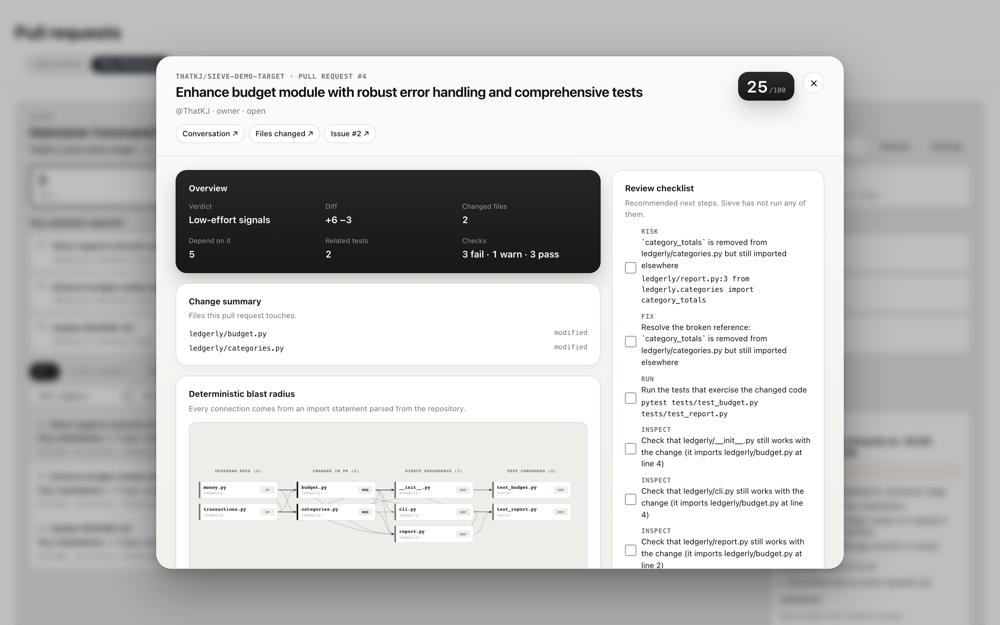

In-Situ GitHub Injection
Slides out directly beside the code diff in GitHub without interrupting your review flow or requiring context switching.
Sieve is a local-first maintainer workspace that computes deterministic repository blast radius, flags broken downstream imports, and grounds AI reasoning in verified AST facts.

This public website provides complete demonstration data and an interactive HTML5 Canvas repository atlas. For the full live in-situ experience inside GitHub, run our unpacked Chrome extension alongside the local Python daemon (python3 -m sieve --serve on 127.0.0.1:8787).
Open Sieve on any pull request and inspect it like an architectural blueprint.
Slides out directly beside the code diff in GitHub without interrupting your review flow or requiring context switching.
Standard-library Python AST parsing extracts import statements and symbol exports to compute the true ripple effect across your codebase.
Flags renamed functions, modified signatures, and broken downstream imports before you merge untested contributor changes.
Distinguishes between claimed test coverage and actual test files importing the modified symbols in your test suite.
ast.parse(source) // static only
0 untrusted evals
Inspects incoming pull requests statically through AST tokenization. Contributor code is never executed, evaluated, or run in your environment.
Pairs the rendered high-contrast dependency diagram with structured AST facts for grounded architectural risk evaluation.
Import statements, symbol signatures, test coverage assertions, and git patch hunks — parsed statically from your repository snapshot without executing code.
Directly in your browser: maintainer queue triage on the PR list, in-situ blast radius beside pull request diffs, and deep interactive repository atlases.
Real GitHub Repository Verification
Explore live deterministic verification against real pull requests in our public target repo, ThatKJ/sieve-demo-target.
A clean accounting format fix with an attached regression test. Confirmed isolated with zero downstream breakage.
Polished PR description claiming clean tests, but renames an internal helper function that is still imported by ledgerly/reporting.py.
A drive-by typo fix in README.md with no linked issue or test requirements. Automatically flagged for low-risk quick review.
Real Production Screenshots
Real, unedited screenshots of Sieve running inside GitHub with our unpacked Chrome extension and local daemon.


Deterministic Architecture
Deterministic AST parsing provides the ground truth. Multimodal AI provides architectural perspective.
Deterministic standard-library AST parser indexes import trees and symbol tables in milliseconds.
cd ThatKJ/sieve
python3 -m sieve --serveManifest V3 unpacked extension injects review drawer into GitHub without running untrusted code.
chrome://extensionsextension/Open any pull request on GitHub to inspect blast radius, verify tests, and ask Gemma 4.
Enterprise Security
Designed for open-source maintainers and engineering teams protecting proprietary codebases.
AST parsing, file tree indexing, and deterministic tracking execute on 127.0.0.1:8787. Full codebase contents never leave your workstation.
Sieve inspects code purely through static Abstract Syntax Tree (AST) parsing. Untrusted contributor PR code is never evaluated, imported, or run in your environment.
Sieve operates strictly in read-only mode using standard GitHub tokens. It never creates unwanted comments, triggers webhooks, or mutates repository state without explicit confirmation.
Visual intelligence is triggered only when explicitly requested. It transmits only the rendered high-contrast dependency diagram and extracted symbol metadata to Google's Generative Language API.
Try Sieve's interactive repository atlas now or install the extension to inspect your own GitHub repositories.